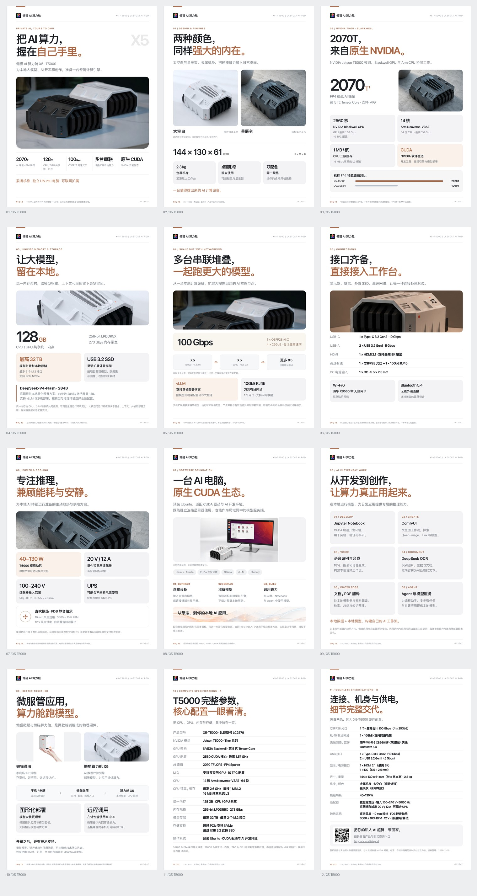

<!doctype html><html lang="zh-CN"><meta charset="utf-8"><meta name="viewport" content="width=device-width,initial-scale=1"><title>懒猫算力舱 X5 · 售前资料</title><style>*{box-sizing:border-box}body{margin:0;background:#fff;font-family:-apple-system,BlinkMacSystemFont,"PingFang SC",sans-serif;padding:7vw;color:#24272c}main{max-width:1060px;margin:auto}small{color:#b7734c;letter-spacing:.18em}h1{font-size:clamp(38px,6vw,70px);letter-spacing:-.05em;line-height:1.2;margin:32px 0}p{font-size:18px;line-height:1.9;color:#8b9098}nav{display:grid;grid-template-columns:repeat(auto-fit,minmax(230px,1fr));gap:18px;margin:38px 0}a{display:block;padding:28px;border:1px solid #e7e8eb;background:#f7f7f9;border-radius:20px;text-decoration:none;color:#24272c;font-size:23px}a span{display:block;font-size:13px;line-height:1.8;color:#949ba4;margin-top:14px}.preview{width:100%;border-radius:20px;margin-top:20px}footer{border-top:1px solid #e5e6e9;margin-top:40px;padding-top:22px;font-size:13px;color:#9ba0a7;line-height:1.8}</style><main><small>LAZYCAT / X5–T5000 / PRIVATE AI</small><h1>把 AI 算力，<br>握在自己手里。</h1><p>懒猫算力舱 X5-T5000 售前资料<br>黑白双配色实拍 · 完整硬件参数 · 软件与微服协同</p><nav><a href="电脑观看.html">电脑观看 ↗<span>完整产品介绍 · 图片已内嵌 · 可离线转发</span></a><a href="手机观看.html">手机观看 ↗<span>专门调整字号与排版 · 适合移动端阅读</span></a><a href="懒猫算力舱X5-T5000-介绍资料.pdf">下载介绍 PDF ↗<span>12 页 · 可单页查看、转发与打印</span></a><a href="手机观看-懒猫算力舱X5-T5000.pdf">手机长版 PDF ↗<span>单页连续阅读 · 适合手机查看</span></a><a href="宣传图片/">宣传图片 ↗<span>12 张独立 PNG · 含 HTML 排版源文件</span></a></nav><footer>仅介绍 X5-T5000。太空白与星辰灰产品照片来自懒猫官网。<br>源文案、参数核对记录与图片来源详见 source 目录。制作日期：2026-11-19。</footer></main></html>